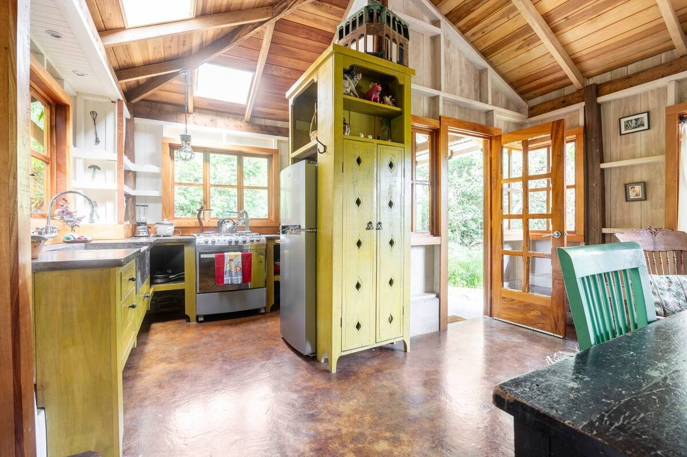
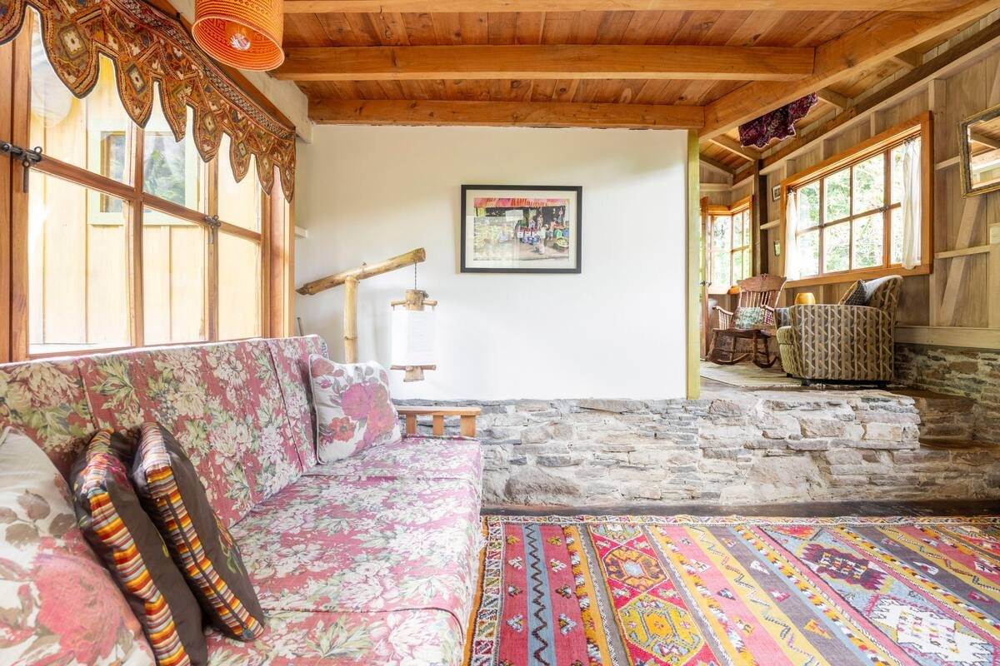
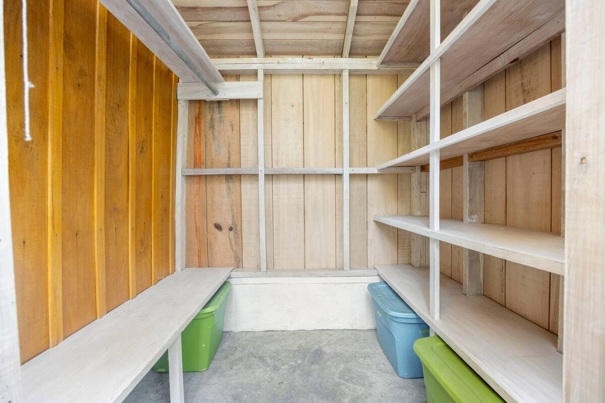

The Lilly Pad
A compact cottage on three levels beside a fish pond, among fruit trees and coffee. Kitchen, dining area and a small sitting area are on the entry level; the living room is a few stone steps down, with the sleeping loft above it, reached by a narrow staircase built in over the bookshelves.
Una casita compacta en tres niveles junto a un estanque de peces, entre frutales y café. La cocina, el comedor y una pequeña sala están en el nivel de entrada; la sala principal está unos escalones de piedra más abajo, con el dormitorio en el tapanco arriba, al que se sube por una escalera angosta construida sobre los estantes de libros.
Handmade concrete counters and sink, an insulated cement soaking tub and a shower, and solar hot water — lots of it. The patio looks out over the tilapia pond.
Encimeras y fregadero de concreto hechos a mano, una bañera de cemento aislada y ducha, y agua caliente solar — y bastante. El patio da al estanque de tilapias.


